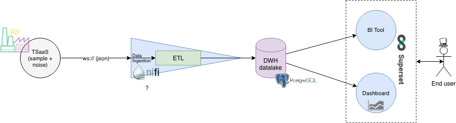

TSimulus Presentation
Alexandre Nuttinck
CETIC Avenue Jean Mermoz 28, 6041 Charleroi
23-03-2019
Benchmark Tools Categories
TSimulus ~ Sensors SimulatorTool made at CETIC. With TSimulus, we can:
|
input for |
Performance / Load TestingDetermines a system's performance under real-life load conditions. Helps determine how the application behaves when there are usage spikes. |
input for |
MonitoringServices and infrastructure monitoring tools provide information on the state of the system. Should be coupled with the Load testing tests and/or with TSimulus. |
TSimulus
An opensource realistic time series generator made at CETIC.

Mathieu Goemine TSimulus Creator |

Alexandre Nuttinck TSimulus Contributor |
TSimulus
Origins
- EAM-SDI: research project with Guardis.
- Specific area of automatic infrastructure management.
- Collect data of cpus, fans, ...
- Monitoring, take reactions against events.
- Problem: lack of real data and in real time.
- The solution was to simulate a large number of sensors gathering information from a collection and analysis system.
TSimulus
What is TSimulus?
TSimulus (formally, RTS-Gen) is a tool for generating random, yet realistic, time series values.
Time series?
- An ordered sequence of points in time, each of them is associated with at most one value.
- Timestamp → value (typically, real).
- example: 2018-03-12T14:00:00.000 - 20°C
- Used in a wide variety of fields.
Random but realistic?
- Convincing noise.
- Models, patterns.
TSimulus
How TSimulus works?
|
In input 
A DSL that describes "the look" of the timeseries Cycles (daily, weekly) Noise (white, ARMA) combinations conditions |
Output 
triplets (series, timestamp, value) |
TSAAS ~ TSimulus as a Service
TSimulus as Sensors simulator
TSAAS ~ TSimulus as a Service
TSimulus as Sensors simulator
|
Aéropole de Charleroi-Gosselies Avenue Jean Mermoz 28 B-6041 Charleroi - Belgique
|
TSimulus
|